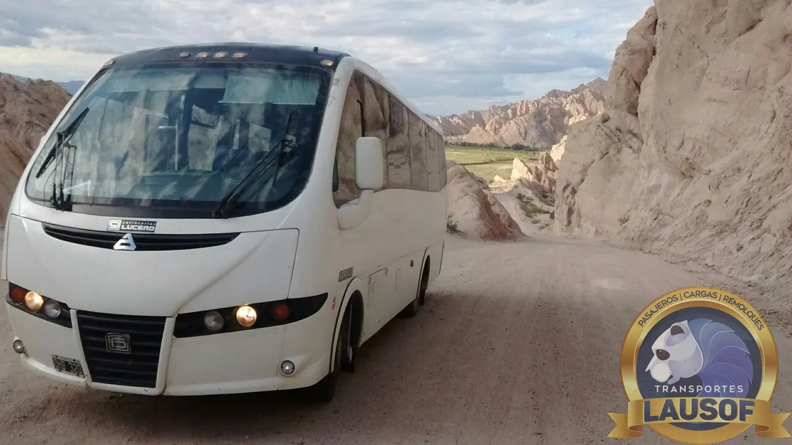
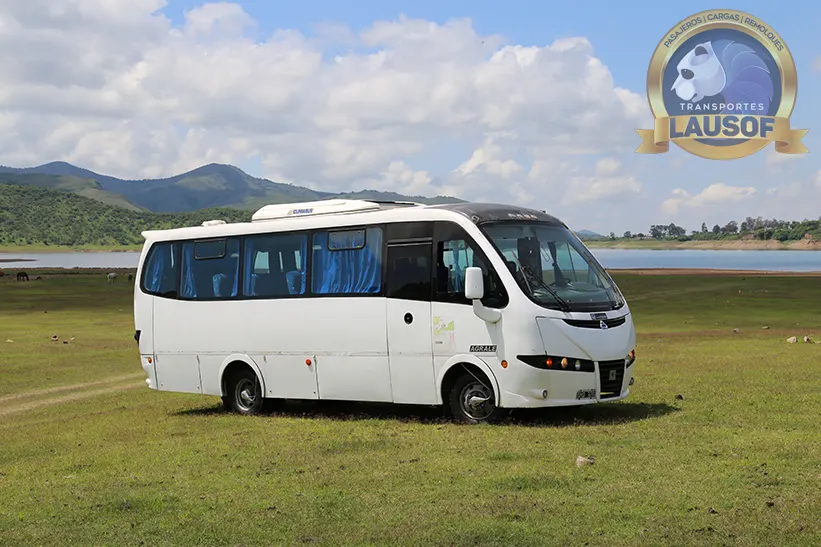
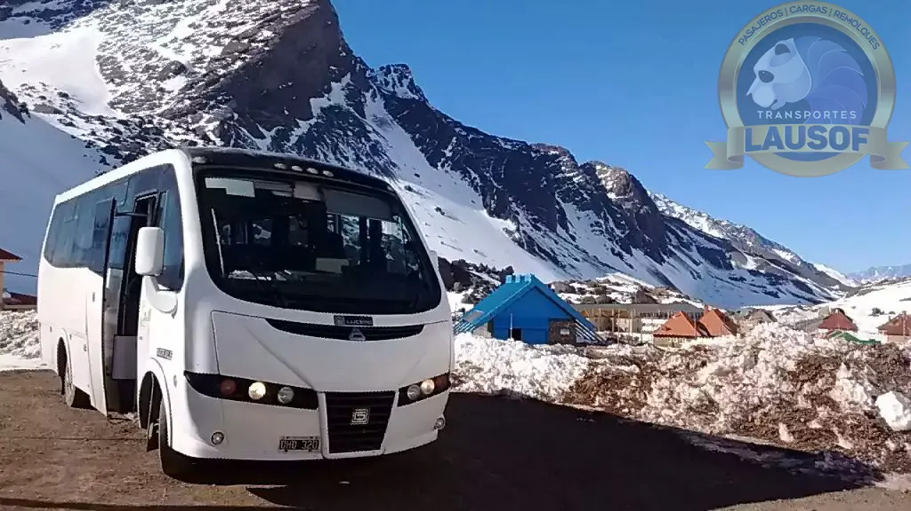

Clubes y delegaciones deportivas
Traslados para clubes y delegaciones deportivas
Llevamos a tu equipo a la fecha de visitante: combis de 19+1 plazas con chofer profesional para delegaciones de rugby, hockey y fútbol, desde el club hasta canchas de Salta, Jujuy, Tucumán y todo el NOA.
Por qué habilitado
Cuando viaja el club, el transporte no se improvisa
En una delegación juvenil viajan menores a cargo del club. Por eso, para nosotros hay cosas que no son negociables: unidad habilitada, seguro de pasajeros y un chofer profesional al volante.
Habilitación N.º 60284: las unidades pueden cruzar a Jujuy, Tucumán o cualquier provincia del NOA con los papeles en regla.
Cada persona que sube a la combi viaja cubierta por el seguro de pasajeros, desde la salida hasta la vuelta al club.
Licencia habilitante, psicofísico y ART al día. Choferes que conocen las rutas del NOA de memoria, con sol, lluvia o nieve.
Las unidades en servicio llevan GPS: el viaje se puede seguir, y el club sabe dónde está el equipo.
El viaje
De la puerta del club a la cancha, y de vuelta
Transportamos pasajeros desde 2010. El servicio se arma según el fixture: nos pasás la fecha y el horario del partido, y nosotros armamos la salida.
Para la fecha de visitante: la combi lleva al equipo, espera el partido y los trae de vuelta en el día.
Para torneos de fin de semana o canchas lejanas: el chofer y la unidad quedan a disposición de la delegación.
Jugadores, cuerpo técnico y delegados en combis de 19+1 plazas, con lugar para bolsos y utilería.
La combi busca al equipo en el club y lo deja en el club: ningún chico queda a pie ni llega por su cuenta.
Salida calculada para llegar con tiempo de entrar en calor, no sobre la hora del partido.
Si viaja más de un plantel, sumamos unidades y toda la delegación viaja coordinada.
Las unidades
Combis 19+1 mantenidas en taller propio
Las combis se revisan y se reparan con nuestro propio equipo mecánico, antes de cada viaje largo. Menos riesgo de que una rotura deje al equipo sin partido.



Cómo cotizar
Tres datos y te cotizamos en el día
Escribinos por WhatsApp con estos tres datos y te respondemos con la cotización. Hablás siempre con la misma persona, de la cotización al día del viaje.
Qué día se juega y a qué hora: con eso armamos el horario de salida.
A qué cancha o club van, en Salta, Jujuy, Tucumán o donde toque de visitante.
Jugadores, cuerpo técnico y delegados: con la cantidad definimos cuántas unidades hacen falta.
Preguntas frecuentes
Lo que los clubes nos preguntan antes de viajar
¿Pueden llevar una delegación a Jujuy o Tucumán?
Sí. Tenemos habilitación CNRT interjurisdiccional (N.º 60284), así que las unidades pueden viajar entre provincias: Jujuy, Tucumán y todo el NOA.
¿El viaje puede ser ida y vuelta el mismo día?
Sí, es lo más habitual en la fecha de visitante: la combi lleva al equipo, el chofer espera el partido y vuelven en el día. Para torneos largos también cotizamos el viaje con noche incluida.
¿Entran los bolsos y la utilería?
Sí. Las combis tienen lugar para los bolsos de todo el plantel y la utilería del equipo: palos, bochas, conos, botiquín y lo que el cuerpo técnico necesite llevar.
¿Emiten factura para el club?
Sí. Somos Lausof S.R.L., CUIT 30-71146774-9, y emitimos factura A, a nombre del club o de quien organice el viaje.
¿Tu equipo juega de visitante?
Contanos la fecha del partido, a dónde viajan y cuántos son. Te respondemos con la cotización en el día.